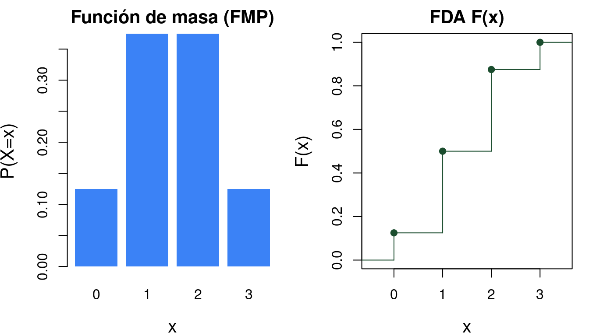
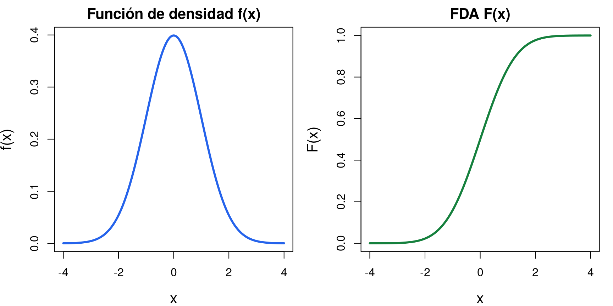
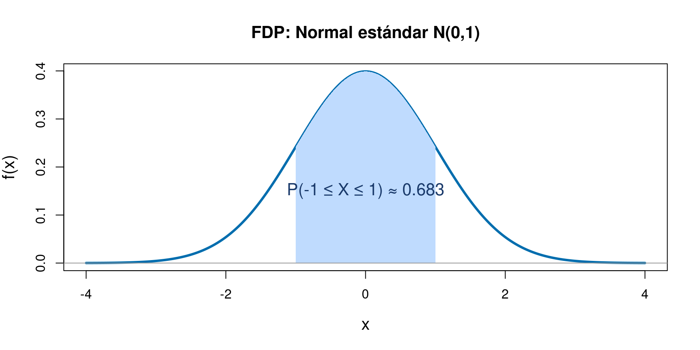
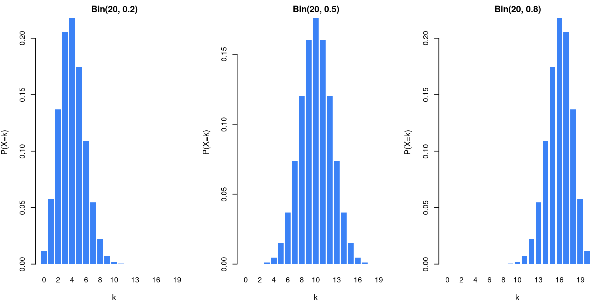

Bioestadística Fundamental
Departamento de Estadı́stica, Sede Bogotá
Contenido
Variables aleatorias
- Definición formal.
- Variables discretas y continuas.
- Ejemplos en contexto biológico.
- Interpretación probabilística.
Función de distribución
- FDA y sus propiedades.
- Cálculo de probabilidades.
- Relación con variables discretas.
- Ejercicios y gráficos.
De eventos a distribuciones: el puente
Cada paso construye el siguiente.
Experimento
Siembro 10 semillas y observo cuántas germinan.
Clases 4–5
Conteo
\(\binom{10}{k}\) formas de elegir cuáles \(k\) semillas germinan.
Clases 7-8
Variable aleatoria
\(X=\) número de germinaciones. Un número resume el resultado.
Clase 9
Distribución
\(X \sim \text{Bin}(10, p)\) da \(P(X=k)\) para todo \(k\) de una vez.
Clase 9 →
Todo lo que aprendimos sobre probabilidad es el ingrediente de las distribuciones.
El problema que queremos resolver
En un lote de 10 semillas de maíz, cada semilla germina con probabilidad \(p = 0.8\). ¿Cuál es la probabilidad de que germinen exactamente 7?
❌ Enfoque de clases 4–7: listar eventos
\(\Omega = \{GGGGGGGGGG,\; FGGGGGGGGG,\;\ldots\}\)
\(|\Omega| = 2^{10} = \mathbf{1024}\) resultados posibles.
Para \(P(\text{exactamente 7 germinan})\) hay que contar todos los subconjuntos de tamaño 7… \(\binom{10}{7} = 120\) eventos.
✓ Enfoque nuevo: distribución de probabilidad
Sea \(X =\) número de semillas que germinan. Entonces \(X \sim \text{Bin}(10,\, 0.8)\) y:
\(P(X = 7) = \binom{10}{7}(0.8)^7(0.2)^3 \approx 0.201\)
Una sola expresión reemplaza los 1024 casos.
Las distribuciones son atajos que condensan toda la probabilidad de un fenómeno en una fórmula.
¿Qué es un parámetro?
Un parámetro es el control que ajusta una distribución.
Mismo termostato
Lo ajustas a 18 °C o 28 °C. Mismo dispositivo, temperatura distinta.
Temperatura = parámetro
Misma distribución
\(X \sim \text{Bin}(10,\, 0.3)\) vs. \(X \sim \text{Bin}(10,\, 0.9)\). Misma fórmula, comportamiento distinto.
\(p\) = parámetro
El reto real
En la práctica no sabemos el valor del parámetro. Lo estimamos con datos.
Eso es inferencia
¿Qué es una distribución de probabilidad?
Una distribución es el mapa completo de un fenómeno aleatorio:
muestra todos los valores posibles y qué tan probable es cada uno.
Sin distribución
Sé que al lanzar un dado puede salir 1, 2, 3, 4, 5 o 6.
Pero no sé cuánto esperar, ni cuán seguido ocurre cada valor.
Con distribución
| \(x\) | 1 | 2 | 3 | 4 | 5 | 6 |
|---|---|---|---|---|---|---|
| \(P(X=x)\) | \(\frac{1}{6}\) | \(\frac{1}{6}\) | \(\frac{1}{6}\) | \(\frac{1}{6}\) | \(\frac{1}{6}\) | \(\frac{1}{6}\) |
Ahora sé exactamente qué esperar de cada resultado.
📍
Qué valores puede tomar
El soporte de la variable
⚖️
Con qué probabilidad
La función de masa o densidad
📐
Cómo se acumula
La función de distribución \(F(x)\)
Variables Aleatorias
Definición y tipos
Del espacio muestral a los números: cuantificando la incertidumbre
Bioestadística Fundamental — Departamento de Estadística, UNAL Bogotá
¿Por qué necesitamos variables aleatorias?
- Los espacios muestrales pueden contener resultados no numéricos: vive/muere, sano/enfermo, especie A/B/C.
- Para aplicar herramientas matemáticas necesitamos asignar un número a cada resultado del experimento.
- Una variable aleatoria es precisamente esa función: traduce los resultados del experimento al lenguaje de los números reales.
- Con ello podemos calcular probabilidades, esperanzas, varianzas y mucho más de forma sistemática.
Ejemplo 1: ensayo clínico
En un estudio sobre malaria en el Chocó, se aplica un tratamiento a 10 pacientes. Para cada paciente se registra si se recupera (R) o no se recupera (N).
- El espacio muestral \(\Omega\) tiene \(2^{10} = 1024\) posibles resultados: secuencias de R y N.
- Si definimos \(X = \text{número de pacientes que se recuperan}\), \(X\) es una variable aleatoria con valores posibles \(\{0, 1, 2, \ldots, 10\}\).
- En lugar de trabajar con 1024 eventos, trabajamos con 11 valores numéricos. ¡Mucho más manejable!
Definición formal
- Formalmente, \(X\) debe ser medible: para todo \(x \in \mathbb{R}\), el conjunto \(\{\omega \in \Omega : X(\omega) \leq x\}\) debe ser un evento (pertenecer a la sigma-álgebra).
- En la práctica de la estadística, bioestadística, agronomía y otras disciplinas, esta condición siempre se cumple con las variables que medimos.
- Convencionalmente usamos letras mayúsculas (\(X\), \(Y\), \(Z\)) para variables aleatorias y minúsculas (\(x\), \(y\), \(z\)) para sus valores observados.
Dos grandes tipos de variables aleatorias
- La distinción determina qué herramienta matemática usamos: sumas para discretas, integrales para continuas.
Ejemplos de variables discretas
- Número de plantas de café con parásito nematodo Meloidogyne en un lote: \(X \in \{0, 1, 2, 3, \ldots\}\)
- Número de plantas infectadas con mosca blanca en un lote de 50: \(X \in \{0, 1, \ldots, 50\}\)
- Número de riegos aplicados en una semana: \(X \in \{0, 1, 2, \ldots\}\)
- Nótese que los valores son enteros no negativos que se pueden contar uno a uno.
- El espacio de valores puede ser finito (lote de 50 plantas) o infinito numerable (conteos sin límite superior natural).
Ejemplos de variables continuas
- Peso de un neonato al nacer: \(X \in (0, \infty)\) en gramos
- Concentración de nitratos en agua de río: \(X \in [0, \infty)\) en mg/L
- Temperatura corporal de un bovino: \(X \in \mathbb{R}^+\) en °C
- Tiempo hasta la muerte de una bacteria expuesta a antibiótico: \(X \in (0, \infty)\) en horas
- Entre dos valores cualesquiera siempre existe otro valor posible, es decir, el recorrido no tiene “saltos”.
Función de distribución acumulada (FDA)
- \(F(x)\) mide la probabilidad acumulada hasta el valor \(x\): la probabilidad de que \(X\) no supere \(x\).
- La FDA está definida para todo número real, tanto para variables discretas como continuas.
- Es la herramienta unificadora: permite comparar variables discretas y continuas bajo el mismo marco.
Propiedades de la FDA
- \(0 \leq F(x) \leq 1\) para todo \(x \in \mathbb{R}\)
- \(F\) es no decreciente: si \(a < b\) entonces \(F(a) \leq F(b)\)
- \(\lim_{x \to -\infty} F(x) = 0\) y \(\lim_{x \to +\infty} F(x) = 1\)
- \(F\) es continua por la derecha: \(\lim_{h \to 0^+} F(x+h) = F(x)\)
- La propiedad 4 distingue la FDA de otras funciones: en variables discretas tiene saltos, pero siempre es continua por la derecha.
FDA de una variable discreta

\(X \sim \text{Binomial}(3, 0.5)\): número de éxitos en 3 lanzamientos de moneda.
Fórmulas para calcular probabilidades de la FDA
- Donde \(F(a^-) = \lim_{x \to a^-} F(x)\) es el límite por la izquierda en \(a\).
- Para variables continuas: \(P(X = a) = 0\) para todo \(a\), y \(F\) es diferenciable en casi todo punto.
Función de masa de probabilidad (FMP)
Propiedades:
- La FMP satisface: \(p(x_i) \geq 0\) para todo \(i\), y \(\sum_{i} p(x_i) = 1\).
- \(0 \leq p(x)\leq 1 \quad \text{para todo } x\)
- La probabilidad de un conjunto de valores se obtiene sumando: \(P(a\leq X\leq b)=\sum_{x=a}^{b} p(x)\)
- Si un valor no puede ocurrir: \(p(x)=0\)
- La probabilidad de un punto específico es \(P(X = x) = p(x)\), esto quiere decir que puede ser mayor que cero.
- La FDA se obtiene como \(F(x) = \sum_{x_i \leq x} p(x_i)\), se calcula como una suma acumulada.
Función de densidad de probabilidad (FDP)
Propiedades:
- La FDP satisface: \(f(x) \geq 0\) y \(\int_{-\infty}^{\infty} f(x)\,dx = 1\).
- Para cualquier intervalo: \(P(a \leq X \leq b) = \int_a^b f(x)\,dx\), esto equivale a calcular el área bajo la curva.
- En variables continuas, la probabilidad en un solo punto es cero: \(P(X=a)=0\)
- La FDA se obtiene integrando la FDP: \(F(x)=\int_{-\infty}^{x} f(t)\,dt\)
- Geométricamente, las probabilidades corresponden a áreas bajo la curva de densidad.
- En variables aleatorias continuas \(P(a < X < b) = P(a \leq X \leq b)\): los extremos no importan.
FDP y FDA de una variable continua

Gráfica de la FDP

Soporte de una variable aleatoria
- El soporte define el rango natural de la variable: los valores que realmente pueden ocurrir.
- Por ejemplo: número de parásitos en sangre \(\Rightarrow\) soporte \(\{0,1,2,\ldots\}\); temperatura corporal \(\Rightarrow\) soporte \((35, 45)\) °C (en la práctica clínica).
Variables Aleatorias Mixtas
Existen variables que son ni puramente discretas ni puramente continuas. Por ejemplo: el tiempo de supervivencia en un estudio cuando algunos pacientes no presentan el evento (se “censuran”).
- Estas variables tienen una FDA con saltos en ciertos puntos y regiones continuas en otros.
- En este curso nos concentraremos en los dos tipos puros: discreto y continuo.
Modelo probabilístico de una variable
Un modelo probabilístico describe el comportamiento aleatorio de una variable mediante una distribución de probabilidad.
\[ X \sim \text{Nombre}(\theta) \]
donde \(\theta\) representa los parámetros del modelo.
Algunos ejemplos de modelos probabilísticos comunes en biología y agronomía son:
- Modelo discreto con dos resultados posibles: vivo o muerto, sano o enfermo. Se representa como: \(X \sim \text{Bernoulli}(p)\)
- Número de éxitos en \(n\) ensayos. Se representa como: \(X \sim \text{Binomial}(n,p)\)
- Conteo de eventos en un intervalo. Se representa como: \(X \sim \text{Poisson}(\lambda)\)
- Modelo continuo con forma de campana. Se representa como: \(X \sim \text{Normal}(\mu,\sigma^2)\)
- Modelo de tiempos de espera. Se representa como: \(X \sim \text{Exp}(\lambda)\)
Modelo probabilístico Bernoulli
\(X \sim \text{Bernoulli}(p)\) si \(P(X=1) = p\) y \(P(X=0) = 1-p\), con \(0 < p < 1\). Su FMP es: \[p(x) = p^x (1-p)^{1-x}, \quad x \in \{0,1\}\]
- Modela experimentos con exactamente dos resultados: éxito (\(X=1\)) o fracaso (\(X=0\)).
- Ejemplos: una semilla germina (sí/no), un paciente responde al tratamiento (sí/no), una vaca produce leche de alta calidad (sí/no).
Construcción de la Distribución Binomial
- \(X\) cuenta el número de éxitos en \(n\) ensayos independientes con la misma probabilidad de éxito \(p\).
Distribución Binomial

Para \(p < 0.5\) sesgada a la derecha; para \(p = 0.5\) la distribución es simétrica; para \(p > 0.5\) sesgada a la izquierda.
Ejemplo 2
En un cultivo de tomate en el pueblo de La Unión, Antioquia, un ingeniero analiza la germinación de semillas mejoradas. Se sabe que cada semilla tiene una probabilidad de germinar correctamente de \(p=0.85\). Si se siembran \(n=10\) semillas, determine la probabilidad de que germinen exactamente \(x=8\) semillas.
Solución:
Definimos \(X\) como el número de semillas que germinan, entonces \(X \sim \text{Binomial}(10, 0.85)\).
Aplicando la distribución binomial: \[P(X=8)=\binom{10}{8}(0.85)^8(0.15)^2 = 45(0.2725)(0.0225) \approx 0.276\]
La probabilidad de que germinen exactamente 8 semillas es aproximadamente \(27.6\%\).
Ejemplo 3
En un cultivo de maíz la probabilidad de que una planta resista una plaga es de \(p=0.70\). Se seleccionan aleatoriamente \(n=5\) plantas. Determine la probabilidad de que como máximo 2 plantas resistan la plaga.
Solución:
Definimos \(X\) como el número de plantas que resisten la plaga, \(X \sim \text{Binomial}(5, 0.70)\). Esto equivale a calcular \(P(X \leq 2) = P(X=0) + P(X=1) + P(X=2)\). Calculamos cada término:
\[P(X=0)=\binom{5}{0}(0.70)^0(0.30)^5=0.002; \quad P(X=1)=\binom{5}{1}(0.70)^1(0.30)^4=0.03;\]
\[ P(X=2)=\binom{5}{2}(0.70)^2(0.30)^3=0.13 \]
Sumando: \(P(X \leq 2) = 0.00243 + 0.02835 + 0.13230 = 0.16308\). La probabilidad de que máximo 2 plantas resistan la plaga es aproximadamente \(16.31\%\).
Algunas distribuciones de Probabilidad
Distribución de Poisson
- Modela el número de eventos en un intervalo de tiempo o espacio fijo, por ejemplo, casos de una enfermedad en un municipio por semana, bacterias en un ml de agua.
- El parámetro \(\lambda\) es simultáneamente la media y la varianza de la distribución.
Ejemplo 4: Distribución de Poisson
En un cultivo de arroz se presenta un promedio de \(\lambda=2\) sectores afectados por una plaga por semana. Determine la probabilidad de que en una semana se presenten por lo menos 3 sectores afectados.
Solución:
Definimos \(X\) como el número de sectores afectados, \(X \sim \text{Poisson}(2)\). Por complemento: \[P(X \geq 3) = 1 - P(X \leq 2) = 1 - [P(X=0)+P(X=1)+P(X=2)]\]
Calculamos cada término: \[P(X=0)=\frac{e^{-2} 2^0}{0!}=0.14; \quad P(X=1)=\frac{e^{-2} 2^1}{1!}=0.27; \quad P(X=2)=\frac{e^{-2} 2^2}{2!}=0.27\]
Sumando: \(P(X \geq 3) = 1 - (0.1353 + 0.2707 + 0.2707) = 1 - 0.6767 = 0.3233\). La probabilidad de que se presenten por lo menos 3 sectores afectados es aproximadamente \(32.33\%\).
Distribución Geométrica
\[ X \sim \text{Geométrica}(p), \quad 0<p<1 \]
con función de masa:
\[ p(k)=(1-p)^{k-1}p, \quad k=1,2,3,\ldots \]
- Modela el número de intentos hasta el primer éxito.
- Ejemplo: número de semillas sembradas hasta obtener la primera germinación.
Ejemplo 5: Distribución Geométrica
En un cultivo de flores la probabilidad de que una semilla germine correctamente es \(p=0.25\). Un agrónomo selecciona semillas aleatoriamente hasta encontrar la primera que germine. Determine la probabilidad de que la primera germinación ocurra en el \(4^\circ\) intento.
Solución:
Aplicando la distribución geométrica \(P(X=x)=(1-p)^{x-1}p\): \[P(X=4)=(1-0.25)^{3}(0.25)=(0.75)^3(0.25)=0.4219 \times 0.25 \approx 0.1055\]
La probabilidad de que la primera germinación ocurra en el \(4^\circ\) intento es aproximadamente \(10.55\%\).
Distribución Hipergeométrica
\[ X \sim \text{Hipergeométrica}(N,K,n) \]
con función de masa:
\[ p(X=x)=\frac{\binom{K}{x}\binom{N-K}{n-x}} {\binom{N}{n}} \]
-
Modela éxitos en muestras sin reemplazo.
-
Ejemplo: número de frutas dañadas en una muestra seleccionada de una cosecha.
Ejemplo 6: Distribución Hipergeométrica
En una finca cafetera se inspecciona un lote de \(N=20\) sacos de café, de los cuales \(K=6\) presentan humedad excesiva. Si se seleccionan aleatoriamente \(n=4\) sacos sin reemplazo, determine la probabilidad de que exactamente \(2\) sacos tengan humedad excesiva.
Solución:
Aplicando la distribución hipergeométrica: \[P(X=2)=\frac{\binom{6}{2}\binom{14}{2}}{\binom{20}{4}}=\frac{15 \times 91}{4845}=\frac{1365}{4845}\approx 0.282\]
La probabilidad de seleccionar exactamente 2 sacos con humedad excesiva es aproximadamente \(28.2\%\).
Distribución Uniforme continua
- Su FDA es \(F(x) = \frac{x-a}{b-a}\) para \(a \leq x \leq b\), una función lineal creciente.
- Usada como a priori no informativa en estadística bayesiana y para simular otras distribuciones.
Ejemplo 7: Distribución Uniforme
En un sistema de riego de un cultivo de cebolla el tiempo de activación automática se distribuye uniformemente entre \(A=10\) y \(B=30\) minutos. Determine la probabilidad de que el sistema se active entre \(15\) y \(22\) minutos.
Solución:
Para una distribución uniforme continua \(P(a \leq X \leq b)=\frac{b-a}{B-A}\), sustituyendo: \[P(15 \leq X \leq 22)=\frac{22-15}{30-10} = \frac{7}{20} = 0.35\]
La probabilidad de que el sistema se active entre 15 y 22 minutos es \(35\%\).
Distribución Normal
- \(\mu\) es la media (centro de la campana) y \(\sigma^2\) es la varianza (anchura de la campana).
- Aplicaciones en biología: peso corporal, talla, presión arterial, niveles séricos de glucosa.
Normal estándar
-
La estandarización permite usar una única tabla (o función
pnormen R) para calcular probabilidades de cualquier distribución normal.
Ejemplo 8: Distribución Normal
En un cultivo de aguacate el peso de los frutos sigue una distribución normal con \(\mu=250\) g y \(\sigma=20\) g. Determine la probabilidad de que un aguacate seleccionado al azar pese menos de \(280\) g.
Solución:
Estandarizamos la variable usando \(Z=\frac{X-\mu}{\sigma}\): \[Z=\frac{280-250}{20} = \frac{30}{20} = 1.5 \quad \Rightarrow \quad P(X < 280) = P(Z < 1.5)\]
Consultando la tabla normal estándar: \(P(Z < 1.5) \approx 0.9332\). La probabilidad de que un aguacate pese menos de 280 g es aproximadamente \(93.32\%\).
Distribución Exponencial
- Modela tiempos de espera entre eventos de Poisson: tiempo hasta la próxima infección, tiempo de vida de un organismo bajo condiciones constantes.
- Propiedad sin memoria: \(P(X > s+t \mid X > s) = P(X > t)\).
Si el tiempo entre dos casos consecutivos de dengue en un barrio sigue una \(\text{Exp}(\lambda)\), y ya han pasado 5 días sin un nuevo caso, la probabilidad de esperar al menos 3 días más es la misma que al inicio: \(P(X > 3)\). El reloj se “reinicia” en cada momento.
Ejemplo 9: Distribución Exponencial
En un cultivo de caña de azúcar el tiempo entre fallas de un sistema de riego automático sigue una distribución exponencial con tasa \(\lambda=0.5\) fallas por hora. Determine la probabilidad de que el sistema tarde más de \(3\) horas en presentar una falla.
Solución:
Para la distribución exponencial, \(P(X>x)=e^{-\lambda x}\). Sustituyendo: \[P(X>3)=e^{-(0.5)(3)}=e^{-1.5}\approx 0.223\]
La probabilidad de que el sistema tarde más de 3 horas en fallar es aproximadamente \(22.31\%\).
Distribución Gamma
- \(\alpha\) es el parámetro de forma y \(\beta\) es el parámetro de escala. La Exponencial es un caso especial con \(\alpha=1\).
- Usada para modelar tiempos hasta el \(k\)-ésimo evento, tiempos de supervivencia, concentraciones.
Ejemplo 10: Distribución Gamma
En un cultivo de tomate el tiempo (en días) hasta que un sistema de riego presente la segunda falla sigue una distribución Gamma con \(\alpha=2\) y \(\beta=3\). Determine la probabilidad de que el sistema presente la segunda falla antes de \(4\) días.
Solución:
Para \(\alpha=2\), la FDA tiene forma: \(P(X<x)=1-e^{-x/\beta}\left(1+\frac{x}{\beta}\right)\). Sustituyendo: \[P(X<4)=1-e^{-4/3}\left(1+\frac{4}{3}\right)=1-0.2636\times 2.333=1-0.6144=0.3856\]
La probabilidad de que el sistema presente la segunda falla antes de 4 días es aproximadamente \(38.6\%\).
Distribución Beta
\(X \sim \text{Beta}(\alpha, \beta)\), con \(\alpha, \beta > 0\), si:
\[ f(x)=\frac{\Gamma(\alpha+\beta)} {\Gamma(\alpha)\Gamma(\beta)} x^{\alpha-1}(1-x)^{\beta-1}, \quad 0<x<1 \]
donde \(\Gamma(\cdot)\) es la función Gamma.-
\(\alpha\) y \(\beta\) controlan la forma de la distribución sobre el intervalo \((0,1)\).
-
Usada para modelar proporciones, probabilidades y porcentajes.
Ejemplo 11: Distribución Beta
En un cultivo de uva la proporción de humedad del suelo sigue una distribución Beta con \(\alpha=2\) y \(\beta=2\). Determine la probabilidad de que la humedad sea menor que \(0.5\).
Solución:
Con \(\Gamma(4)=6\) y \(\Gamma(2)=1\), la FDP simplifica a \(f(x)=6x(1-x)\). Calculando: \[P(X<0.5)=\int_0^{0.5}6x(1-x)\,dx=\left[3x^2-2x^3\right]_0^{0.5}=0.75-0.25=0.5\]
La probabilidad de que la humedad del suelo sea menor que \(0.5\) es \(50\%\). Este resultado es esperable dado que \(\alpha=\beta\), lo que hace la distribución simétrica alrededor de \(0.5\).
Tabla de resumen distribuciones discretas
| Distribución | Parámetros | Soporte | Notación |
|---|---|---|---|
| Bernoulli | \((p \in (0,1))\) | \((\{0,1\})\) | \(\text{Ber}(p)\) |
| Binomial | \((n \in \mathbb{N}, p \in (0,1))\) | \((\{0,1,\ldots,n\})\) | \(\text{Bin}(n,p)\) |
| Poisson | \((\lambda > 0)\) | \((\{0,1,2,\ldots\})\) | \(\text{Poi}(\lambda)\) |
| Geométrica | \((p \in (0,1))\) | \((\{1,2,3,\ldots\})\) | \(\text{Geo}(p)\) |
| Hipergeométrica | \((N,M,n)\) | \((\{0,\ldots,\min(n,M)\})\) | \(\text{Hiper}(N,M,n)\) |
Tabla de resumen distribuciones continuas
| Distribución | Parámetros | Soporte | Notación |
|---|---|---|---|
| Uniforme | \(a < b\) | \((a,b)\) | \(U(a,b)\) |
| Normal | \(\mu \in \mathbb{R},\; \sigma^2 > 0\) | \(\mathbb{R}\) | \(N(\mu, \sigma^2)\) |
| Exponencial | \(\lambda > 0\) | \((0,\infty)\) | \(\text{Exp}(\lambda)\) |
| Gamma | \(\alpha, \beta > 0\) | \((0,\infty)\) | \(\text{Gamma}(\alpha,\beta)\) |
| Beta | \(\alpha, \beta > 0\) | \((0,1)\) | \(\text{Beta}(\alpha,\beta)\) |
Ejercicios Aplicados
Ejercicios: Distribuciones Discretas
En un lote de plantas de banano en Turbo, Antioquia, la probabilidad de que una planta presente síntomas de Sigatoka negra es \(p = 0.30\). Se seleccionan \(n = 12\) plantas al azar. Calcule: (a) \(P(X = 4)\), (b) \(P(X \leq 2)\), (c) \(P(X \geq 9)\).
En un cultivo de papa en Ipiales, Nariño, el número de focos de gota (Phytophthora infestans) por hectárea sigue una \(\text{Poisson}(\lambda = 3)\). Calcule: (a) \(P(X = 0)\), (b) \(P(X > 4)\), (c) \(P(2 \leq X \leq 5)\).
En un banco de semillas de quinua en Silvia, Cauca, la probabilidad de que una semilla sea viable es \(p = 0.40\). Se prueban semillas una a una hasta encontrar la primera viable. Calcule: (a) \(P(X = 3)\), (b) \(P(X \leq 4)\), (c) \(P(X > 5)\).
En un almacén de Duitama, Boyacá, hay \(N = 25\) bultos de semillas de papa, de los cuales \(K = 8\) están contaminados. Se inspeccionan \(n = 5\) bultos sin reemplazo. Calcule: (a) \(P(X = 2)\), (b) \(P(X \leq 1)\), (c) \(P(X \geq 3)\).
Ejercicios: Distribuciones Continuas
El diámetro del tallo de plantas de maíz en Montería, Córdoba sigue \(N(\mu = 3.2\text{ cm},\, \sigma = 0.4\text{ cm})\). Calcule: (a) \(P(X < 3.0)\), (b) \(P(2.8 \leq X \leq 3.6)\), (c) el valor \(x_0\) tal que \(P(X > x_0) = 0.10\).
El tiempo (en horas) entre lluvias en un cultivo de cacao en El Tambo, Huila sigue \(\text{Exp}(\lambda = 0.25)\). Calcule: (a) \(P(X > 6)\), (b) \(P(2 \leq X \leq 8)\), (c) el tiempo medio entre lluvias.
El tiempo de maduración (en días) de frutos de mango en Tolú, Sucre se distribuye uniformemente entre 85 y 110 días. Calcule: (a) \(P(X < 90)\), (b) \(P(95 \leq X \leq 105)\), (c) el tiempo de maduración esperado.
El tiempo (en días) hasta que una trampa de feromonas captura el tercer insecto plaga en un cultivo de espárrago en El Espinal, Tolima sigue \(\text{Gamma}(\alpha = 3,\, \beta = 2)\). Calcule: (a) la media y varianza, (b) \(P(X < 4)\) usando software o tablas.